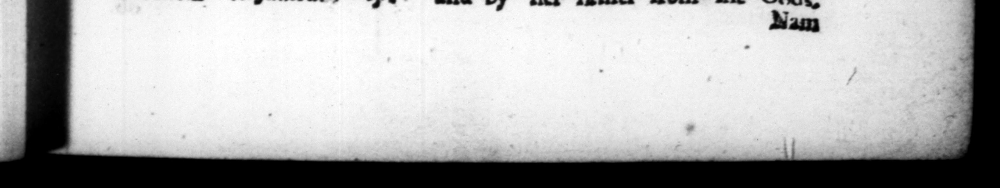

diam, & ut per otium ac re2 1 dicendi magiſtro ifſhmo tune di 1 magi n m daret. Huc dum Hi — jam menſibus — | = Pk ' . in 2 capcus eſt: manſitque apud eos non fine ſumma indignatione prope quainta dies, Nam comites ſervoſque cæte1os inicio ſtatim ad erpedipulſo, nurauteis ac dabias civirares zetimuic in fide, 5. Tribunatu milicum, qui mus Romam reverſo uffragia populi honor obtiit, auctores reſtituendez triunitiæ poteſtatis, cujus vim Sulla ne enfxiſfinie Juvic, L. et iam Cinnæ, uxoris fratri, & qui cum eo civili diſoordia Lepidum ſecuti, poſt necem conſulis ad Sertorium confugerant, reditum In civiratem rogatioue Plotia confecit, habuſtque & iple ſuper ea re-concionem, 6.Quzſtor Juliam amuam, uxoremque Corneliam, defunctas lauda vit e more pro Roſtris. Et in amic# qui dem laudatione, de ejus ac parris ſui utraq; origine fic refert : Amite met uli e maternum gen ab regibus' ortum, patermem cum Dis | 4 D.T,ULTUS"C&S onio Molonis cla7 4s he was ſailing thither in the winter _ he' Was dragi eum uno medico & cubiculariis duobus. urn per tribune, which was the firſt funeral orations in _ this atcount 2 ken by Pirates mar the Iſland of Phare, and continued with them, not the utihoff indignation for al4; with only one cian, ts de chambre; his . Upon the endas pecum uibus redi- of be was "ſet meret nor, dimiſerr, Nume- 7 , — orthw! 4 8 55 out + ratis deinde quinquaginta ta» hn ca w! irates, 4 lentis, . — Wees non e he had = fr them all priſoners, indiſtulit quin & veſtigio claſſe ate wpon them the pun , which deducta perſeq abeun- be had often in raillery threatned them tes : ac edactos in poteſta· 2575 3 — at that time was tem, ſupplicio, quod illis ſcpe wa neigbbouring - countries, m N Cd — e afficeret. Vaſtante regiones ie in the danger that threatened r ne defi- the allies of Nome, be went over in dilcrimine fociorum from Rhodes, where he arrived, into videretur, ab no pertenderat, tranſiit in oh auxiliiſque contractis, & præfecto regis incla ex5. After be was made a military Donoter vated Inm by the people „* his 777 hs fa the 27 7 the y which been ced much redu Syula. He likewih recalled from baniſhment Lucius Cinna his wife's brother, and thoſe dus, by a bill whi civil diflurbance with Lepi afigarion prefered to the people, and Cat ion to 5 4 4 himſelf à ſptech the octaſian. oneunced 4 ſe of his aunt Julia, and «bis wife 4, dccurding to cuſlom in the rofira. And in the commendation of his "aunt, he gives her's and bis father's deſcent both the father and mothers pe My aint Julia was deſc by the mother from Kings, aud by lier father from the Gods, z ma 6. In his queſtorſhip be Nam
